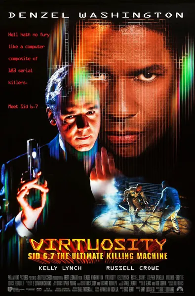

Фильм · 1995 · Боевик, Триллер
Для подготовки полицейских был создан SID 6.7 — виртуальный преступник, «собранный» из психологических портретов реальных серийных убийц. Он неизменно побеждает в учебных симуляциях, поскольку ему нечего терять, — и вскоре обретает физическое тело из керамики в реальном мире. Бывший полицейский Паркер Барнс, чья семья погибла из-за ошибки искусственного интеллекта, — единственный, кто понимает логику этого «цифрового» преступника, и единственный, кому поручено его уничтожить. Боевик середины 90-х, в котором виртуальная реальность встречается с генной инженерией: Дензел Вашингтон охотится за «операционной системой» в облике Рассела Кроу.
To train police forces, SID 6.7 is built — a virtual criminal assembled from the personality profiles of serial killers. He wins the training scenarios because he has nothing to lose — and is promptly given a ceramic body in the real world. Ex-cop Parker Barnes, who lost his family to an AI error, is the only one who understands the 'digital' criminal's logic — and the only one authorized to kill him. A mid-90s actioner about VR meeting genetics, with Denzel Washington chasing Russell Crowe's operating system.
← Вернуться в каталог IT Movies